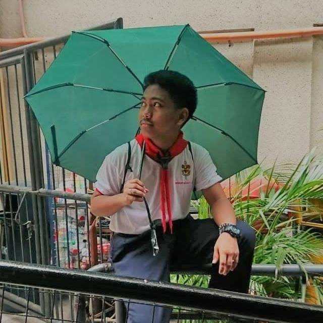
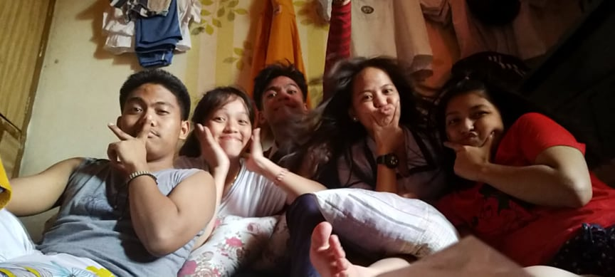
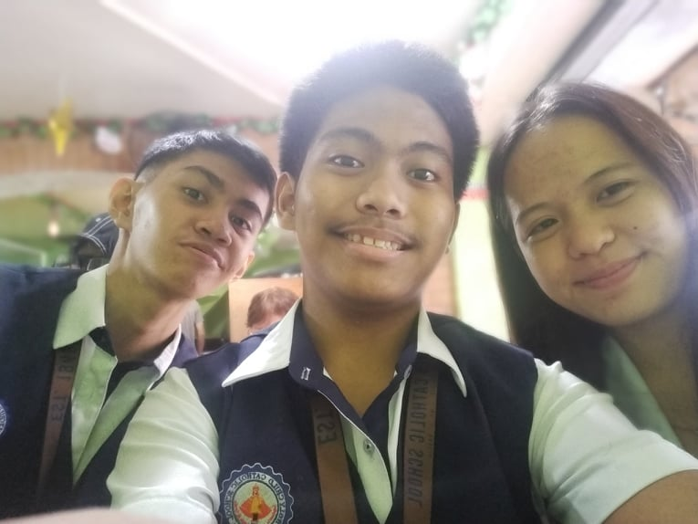
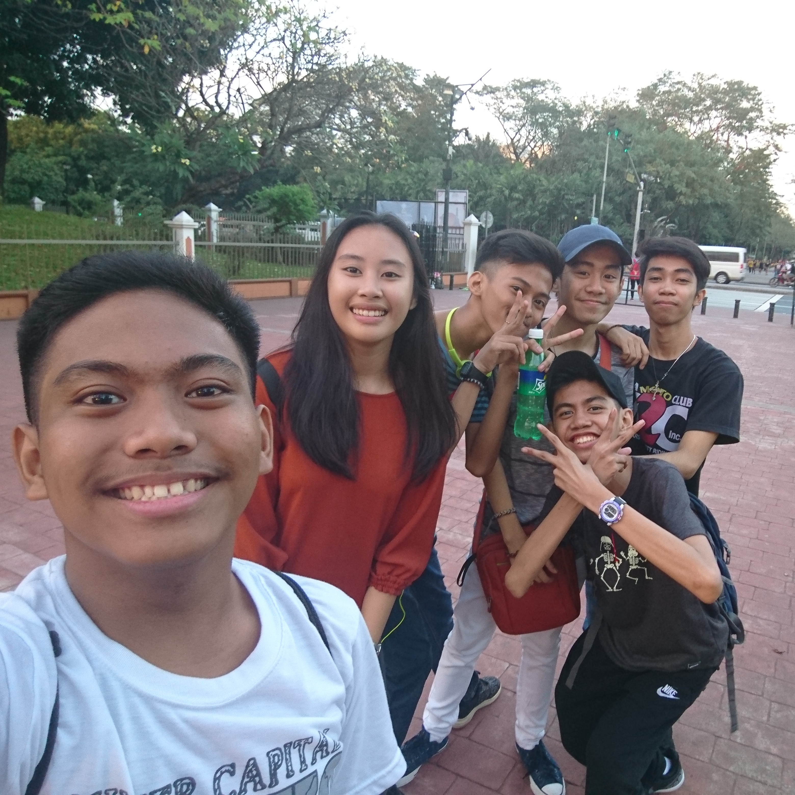

These is the time when my life gets harder and harder. We have practicals and researches, that often we do
at school. I am tired of my groupmates when we always have those times that they didn't even contribute
in the research paper itself. Aside from the bad memories, I also have a lot of memories when my classmates
used to give me free things and free foods. As the time passes by I realize those things aren't good for my
personality, and I wanted to change those routine of mine. I wanted to have my own things that I can give to
others so I can pay them back their kindness to me.
Back to the Main Page